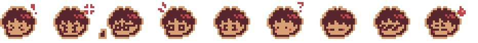
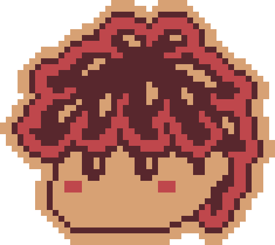
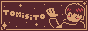

Welcome to my website!!
I'm Tomisito :)
This is an ongoing project for me (as all personal websites tend to be), and I'll be updating it every now and then, so feel free to check it out regularly!

Check out the sections above for more stuff :D
Spruced up the homepage (I'll get back eventually when I figure out javascript for a cooler approach)
Woah, worked on the website for 15 minutes today, small win!
So, today I finally updated the gallery, which now includes the following:
I struggled so much doing this lol, but now it's done!! (I'll probably add more stuff in the future like titles, dates and descriptions to every image when it pops up.
Anyways, other things I did include:
Here's my website badge, feel free to put it up wherever you wish!!
